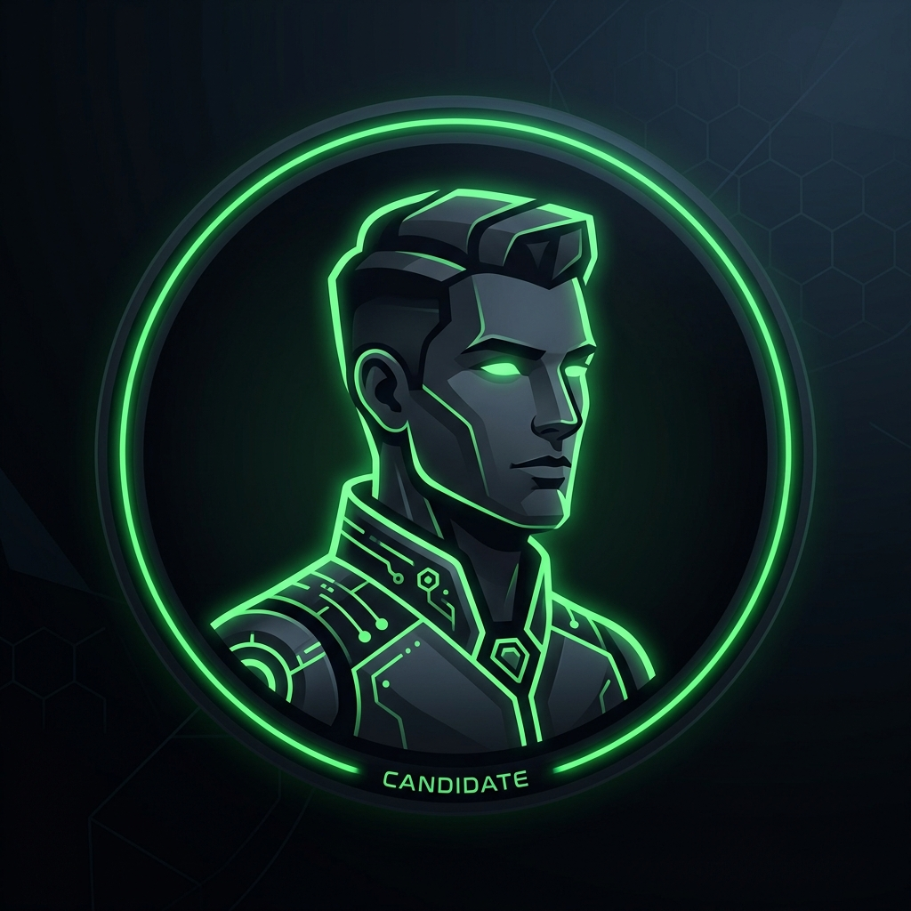

Navegación
Cargando notas...
Análisis de Ofertas Laborales de Data Science
Dataset: Data Science Job Postings (Glassdoor)
¿De qué se trata este trabajo?
El dataset
La pregunta central
Utilidad práctica
La limpieza de datos
-
Calificaciones con "-1"
-
Categorías y tamaños faltantes
-
Sueldos "por hora"
Los Modelos
La regresión predice un número a partir de otras variables, aprendiendo la relación entre ellas.
La clasificación predice una categoría o etiqueta ya definida (por ejemplo alto/bajo o frío/caliente).
El clustering agrupa datos sin etiquetas previas, encontrando patrones y formando grupos automáticamente según similitudes.
Predecir el salario exacto
-
Entrenamiento del modelo
-
Factores de influencia
-
Precisión y estimación
-
Analogía práctica
Rango de Salario
Enfoque por Categorías
En lugar de buscar un número exacto, se le pide al sistema clasificar cada puesto en tres categorías: Bajo, Medio o Alto.
Efectividad
Acertó la categoría en una proporción alta de los casos de prueba, resultando muy efectivo para el tipo de datos analizado.
Utilidad
Permite responder con rapidez y fiabilidad una duda crucial: ¿esta oferta de trabajo paga por encima o por debajo de la media del mercado?
Agrupar ofertas parecidas
Perfil 1 (Alto)
Compuesto por empresas grandes, muy bien calificadas por empleados (alto rating) y con salarios altos.
Perfil 2 (Medio)
Un segmento intermedio, donde tanto el tamaño de la corporación como la banda salarial rondan la media general.
Perfil 3 (Bajo)
Empresas de menor tamaño, emergentes o locales, con rangos salariales estimados más bajos.
Dashboard en Power BI
¿Para qué sirve en la vida real?
Empresas

Candidatos
Consultoras
Limitaciones